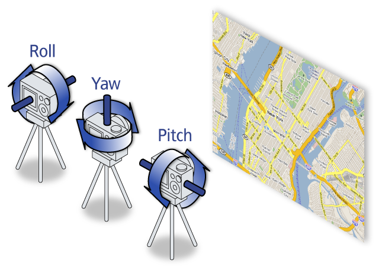
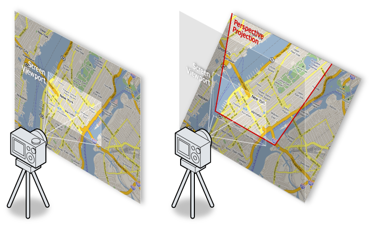
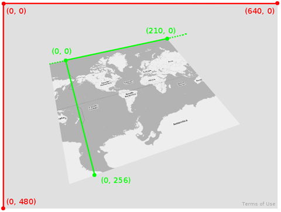

©2010 Google -
Code Home -
Terms of Service -
Privacy Policy -
Site Directory
Google Code offered in:
English -
Español -
日本語 -
한국어 -
Português -
Pусский -
中文(简体) -
中文(繁體)
Maps API for Flash
- Developer Guide
- API Reference
Code Samples:
More Resources:
Maps JavaScript API V3
Maps Javascript API V2
(Deprecated API)
Maps Data API
(Deprecated API)
Static Maps API
Earth API
Includes enterprise licensing and support
Google Maps API for Flash - 3D Maps
Introduction
The Google Maps API for Flash now contains support for three-dimensional (3D) maps. 3D maps using the Maps API for Flash are shown using a realistic perspective much like that used within Google Earth.
Use of 3D maps within the Google Maps API for Flash requires use of a
new object, the Map3D object, which is used in place of the
standard Map object. Rendering of 3D maps is supported on both
Flash 9 and Flash 10 players. However, due to geometry support, use of Flash
10 is recommended as it results in faster rendering. Consult
Compiling for Flash 9/10 for more information about
how to compile your applications for Flash 9 or 10.
This guide illustrates how to use the Map3D object to create
a 3D map, how to manipulate the view of the map, and how to transform
coordinates on the map into screen coordinates (and vice versa). Developers
should make sure they understand the concepts documented in the tutorials of
this documentation set before reading this section.
Support for three-dimensional maps is new. We encourage you to post questions and feature requests to the Google Maps API for Flash forum.
Compiling for Flash 9/10
Although applications built using Google Maps API for Flash will work in both Flash 9 and Flash 10 players, 3D maps take advantage of advanced geometry support in Flash 10, so we recommend that you build your applications for that player.
Note that if you build your applications for Flash 10, but use no code specific to Flash 10, your applications will still work in both Flash 9 or Flash 10, and provide a much better user experience on Flash 10 capable browsers. However, if you do use specific classes/methods for Flash 10, browsers using Flash 9 will throw an error using your applications; in those cases, you may wish to compile separate versions of your application for Flash 9 and for Flash 10.
To compile for Flash 10, you may require a later version of the Flex SDK which contains SWC files for the Flash 10 player. For the latest Flex SDK links, consults Adobe's Flex downloads page.
You will also need to update the Flex SDK or Flex Builder to reference the Flash 10 player SWC appropriately. Consult Adobe's instructions for updating the Flex SDK and Flex Builder to compile for Flash 10. Note that you may need to exit Flex Builder and restart for the settings to take effect.
The 3DMap Object
To add 3D capabilities to your map, you simply need to make the following changes to your code:
- Import the
com.google.maps.Map3D,com.google.maps.View, andcom.google.maps.geom.Attitudeclasses. - Instead of extending a
Mapobject, extend aMap3Dobject. - Within the map's
MAP_PREINITIALIZEevent, set the map's view toVIEWMODE_PERSPECTIVE - Optionally, you can also set an initial attitude for the map to display at an oblique angle. The attitude defines the angle of the map in several directions.
The following code displays a map of New York City, but uses a 3D map and initializes it with an oblique angle:
<?xml version="1.0" encoding="utf-8"?>
<mx:Application xmlns:mx="http://www.adobe.com/2006/mxml" layout="absolute">
<maps:Map3D xmlns:maps="com.google.maps.*" mapevent_mappreinitialize="onMapPreinitialize(event)" id="map"
width="100%" height="100%" key="your_api_key" sensor="true_or_false"/>
<mx:Script>
<![CDATA[
import com.google.maps.LatLng;
import com.google.maps.Map3D;
import com.google.maps.MapEvent;
import com.google.maps.MapOptions;
import com.google.maps.MapType;
import com.google.maps.View;
import com.google.maps.geom.Attitude;
private function onMapPreinitialize(event:MapEvent):void {
var myMapOptions:MapOptions = new MapOptions();
myMapOptions.zoom = 12;
myMapOptions.center = new LatLng(40.756054, -73.986951);
myMapOptions.mapType = MapType.NORMAL_MAP_TYPE;
myMapOptions.viewMode = View.VIEWMODE_PERSPECTIVE;
myMapOptions.attitude = new Attitude(20,30,0);
map.setInitOptions(myMapOptions);
}
]]>
</mx:Script>
</mx:Application>
View example (Map3DSimple.html)
View Source (Map3DSimple.mxml)
Note that you will need an API key (either within the hosted HTML file or the SWF itself) to get this map to display.
The Map Attitude
In the above example, we defined an Attitude for the map.
The attitude is a value of type com.google.maps.geom.Attitude
which defines the angles of incidence for the map, as seen from the viewer's
perspective (which we call the "camera").
These angles of incidence are three values:
yawdefines the "direction" of the camera with respect to north. Ayawof0corresponds to looking straight north.pitchdefines the angle of incidence of the camera with respect to the map's horizon. By default, apitchof zero points corresponds to looking straight down at the map.rolldefines the angle of incidence of the camera with respect to its "footing" (if you are standing, this would be the floor below you). By altering roll, you can place yourself upside down, for example.

Pitch, yaw, and roll are commonly used within aeronautical (and astronautical) engineering to define the orientation of an aircraft and its flight dynamics. For more information, see the Wikipedia article on Flight Dynamics.
In the code sample below, you can independently set either yaw or
pitch. Note that pitch values greater than 70 degrees
are not allowed (the value will be floored to 70) and the roll value
is currently ignored within Attitude declarations.
View example (Map3DAttitude.html)
View Source (Map3DAttitude.mxml)
Controlling a 3D Map
You can manipulate the 3D map using the same keyboard controls as you use on Google Earth and within the Maps API. Clicking and dragging moves the map in the direction being dragged, as you would expect. When dragging the map while holding down an optional modifier key, however, you can alter the attitude of the map:
- SHIFT alters the rotation and attitude of the map around a clicked point.
- CTRL (or the Apple key) alters the rotation and attitude of the map from the point of view of the camera.
A full list of keyboard controls is available within the Google Earth User Guide.
You may also add a NavigationControl that contains panning,
zooming and attitude sub-controls. Adding such a control is recommended as the
control automatically includes appropriate controls for manipulating 3D maps. To
do so, declare a handler for the MAP_READY event and add the
control:
import com.google.maps.controls.MapTypeControl;
import com.google.maps.controls.NavigationControl;
...
// Modify the map declaration to add a mapevent_mapready event
<maps:Map3D xmlns:maps="com.google.maps.*" mapevent_mappreinitialize="onMapPreinitialize(event)" mapevent_mapready="onMapReady(event)" id="map"
width="100%" height="100%" key="your_api_key" sensor="true_or_false"/>
...
// Within the handler, add the control
private function onMapReady(event:MapEvent):void {
map.addControl(new MapTypeControl());
map.addControl(new NavigationControl());
}
Map View Modes
In the previous code sample, notice that the distance between two points on
the screen is greater towards the top of the screen than towards the bottom.
This behavior is due to the map being initialized with a view of
VIEWMODE_PERSPECTIVE. With a
perspective
map, the map is projected on a viewport (the screen) using a virtual
point of reference in front of the screen (the camera). These three
components (the map, the viewport and the camera) form a perspective on the
viewport which gives the illusion of depth perception to the map. (See
illustration below.)

The Map3D object contains a view property
which indicates what sort of view the 3D map should exhibit. This view is a
class of type com.google.maps.View which may contain the
following values:
VIEWMODE_2DA standard two-dimensional map. Use this view if you want the 3D map to exhibit the same look and feel as a standard map.VIEWMODE_PERSPECTIVEconstructs a map view using a 3D perspective based on a "camera's" point of reference. Perspectives are only possible within the Google Maps API for Flash for maps looking "ahead." It is not possible to alter a map so that it "looks behind."VIEWMODE_ORTHOGONALcreates a map with oblique angles but no perspective. Effectively, all distances are equidistant along the longitudinal and latitudinal axes of the map.
The view VIEWMODE_PERSPECTIVE view is graphically intensive
and may work slower on Flash 9, which does not have as advanced geometry
support as Flash 10. For that reason, you may also use
VIEWMODE_ORTHOGONAL which displays a map at a oblique angle, but does
not add perspective. (Effectively, this map eliminates perspective by
placing the camera at an infinite distance to the viewport and map.)
The following code displays the same map of New York City as above but
uses a VIEWMODE_ORTHOGONAL map:
import com.google.maps.LatLng;
import com.google.maps.Map3D;
import com.google.maps.MapEvent;
import com.google.maps.MapOptions;
import com.google.maps.MapType;
import com.google.maps.View;
import com.google.maps.controls.MapTypeControl;
import com.google.maps.controls.NavigationControl;
import com.google.maps.geom.Attitude;
private function onMapPreinitialize(event:MapEvent):void {
var myMapOptions:MapOptions = new MapOptions();
myMapOptions.zoom = 12;
myMapOptions.center = new LatLng(40.756054, -73.986951);
myMapOptions.mapType = MapType.NORMAL_MAP_TYPE;
myMapOptions.viewMode = View.VIEWMODE_ORTHOGONAL;
myMapOptions.attitude = new Attitude(20,30,0);
map.setInitOptions(myMapOptions);
}
private function onMapReady(event:MapEvent):void {
map.addControl(new NavigationControl());
map.addControl(new MapTypeControl());
}
View example (Map3DOrthogonalSimple.html)
View Source (Map3DOrthogonal.mxml)
Notice that when you manipulate the map, you change its attitude but all distances are still equidistant on the map. At lower levels of obliqueness, this may not matter but at higher angles, it will be noticeable.
Animating Location Changes
The Map3D class provides a special flyTo()
method for changing the location, zoom level and Attitude of
the map through animation much like that used in Google Earth. The
flyTo() method takes the following parameters:
- The
LatLngat which to position the map's center - The zoom level to display at the new location
- The
Attitudeto position the camera - The amount of time in seconds (as a floating point value) to effect the animation
Note that if you pass 0 for the time value that you will get
an instantaneous transition. Otherwise, the API will attempt a smooth
animated transition from the current location to the new location.
The following code geocodes submitted locations and positions the map to
the new location using the flyTo() method with a 5 second
animation.
<?xml version="1.0" encoding="utf-8"?>
<mx:Application xmlns:mx="http://www.adobe.com/2006/mxml" layout="absolute">
<mx:Panel title="Google Maps 3D FlyTo Demo" width="100%" height="100%">
<mx:VBox width="100%" height="100%">
<mx:HBox width="100%" height="25">
<mx:Label
text="Enter address: "/>
<mx:TextInput
id="address"
text="Coney Island, Brooklyn, NY"
dropShadowColor="0x000000"
enter="doFlyTo(event);"
/>
<mx:Button
id="submitButton" label="Search"
click="doFlyTo(event);"
/>
</mx:HBox>
<maps:Map3D xmlns:maps="com.google.maps.*"
mapevent_mappreinitialize="onMapPreinitialize(event)"
mapevent_mapready="onMapReady(event)"
id="map"
key="YOUR_API_KEY"
sensor="true_or_false"
width="100%" height="100%" />
</mx:VBox>
</mx:Panel>
<mx:Script>
<![CDATA[
import com.google.maps.LatLng;
import com.google.maps.Map3D;
import com.google.maps.MapEvent;
import com.google.maps.MapMouseEvent;
import com.google.maps.services.GeocodingEvent;
import com.google.maps.services.ClientGeocoder;
import com.google.maps.overlays.Marker;
import com.google.maps.InfoWindowOptions;
import com.google.maps.MapOptions;
import com.google.maps.MapType;
import com.google.maps.View;
import com.google.maps.controls.NavigationControl;
import com.google.maps.geom.Attitude;
import mx.controls.Alert;
private function onMapPreinitialize(event:MapEvent):void {
var myMapOptions:MapOptions = new MapOptions;
myMapOptions.zoom = 12;
myMapOptions.center = new LatLng(40.756054, -73.986951);
myMapOptions.mapType = MapType.PHYSICAL_MAP_TYPE;
myMapOptions.viewMode = View.VIEWMODE_PERSPECTIVE;
myMapOptions.attitude = new Attitude(20,30,0);
this.map.setInitOptions(myMapOptions);
}
private function onMapReady(event:MapEvent):void {
this.map.addControl(new NavigationControl());
}
private function doFlyTo(event:Event):void {
// Instantiate a Geocoder
var geocoder:ClientGeocoder = new ClientGeocoder();
// Add an event listener for a GEOCODING SUCCESS
geocoder.addEventListener(
GeocodingEvent.GEOCODING_SUCCESS,
function(event:GeocodingEvent):void {
var placemarks:Array = event.response.placemarks;
if (placemarks.length > 0) {
map.flyTo(placemarks[0].point,12,new Attitude(20,30,0),3);
var marker:Marker = new Marker(placemarks[0].point);
marker.addEventListener(MapMouseEvent.CLICK, function (event:MapMouseEvent):void {
marker.openInfoWindow(new InfoWindowOptions({content: placemarks[0].address}));
});
map.addOverlay(marker);
}
}
);
geocoder.addEventListener(
GeocodingEvent.GEOCODING_FAILURE,
function(event:GeocodingEvent):void {
Alert.show("Geocoding failed");
trace(event);
trace(event.status);
}
);
geocoder.geocode(address.text);
}
]]>
</mx:Script>
</mx:Application>
View example (Map3DFlyTo.html)
Coordinate Transformations
Unlike a standard two-dimensional map, a three-dimensional map requires greater understanding of how the map is viewed and placed on the screen. This understanding not only affects the overall view of the map, but how to interact with it and how to translate coordinates from one coordinate system to another.
For a 3D map in the Google Maps API for Flash, the "camera" is the focus of the perspective's origin. In general, you don't need to know the camera's position; you're more interested in the result of the camera' position (the view of the map within the viewport). However, you will need to know how to translate coordinates between what the camera sees on the viewport and what the map exhibits on the map at the oblique angle.
On a two-dimensional map, it is relatively straightforward to translate
between locations on a map (LatLng values) and locations on the
screen (pixels) because the map is oriented in the same direction in both
cases. For 3D maps, this is no longer the case, so we also supply "world
coordinates" defined as the pixel coordinates of the map if it were placed
at zoom level 0. World coordinates vary between (0,0) and (256,256) as shown
on the diagram below:

Viewport (screen) coordinates are shown in red, while world coordinates are shown in green. Note that world coordinates wrap longitudinally, so that world coordinate (259.999,0) is immediately adjacent to world coordinate (0,0). In the figure above, world coordinate (210,0) is at the right-hand edge of the map; world coordinate (210.001,0) is at the left-hand edge of the map.
The ICamera interface provides the getTranslationGeometry()
method for converting between these three coordinate systems, useful for placing
three-dimensional objects on the map. For full details, consult the
Maps API for Flash Reference.